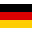
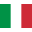
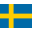

{kind=link}
Maciej Kot
Polscy Skoczkowie
Maciej Kot (ur. 9 czerwca 1991 w Limanowej) – polski skoczek narciarski, zawodnik klubu AZS Zakopane, reprezentant Polski.
Drużynowy brązowy medalista Zimowych Igrzysk Olimpijskich 2018. Drużynowy złoty (2017) i brązowy (2013) medalista mistrzostw świata. Indywidualny wicemistrz świata juniorów z 2009, dwukrotny drużynowy brązowy medalista mistrzostw świata juniorów, dwukrotny indywidualnie oraz drużynowy medalista Zimowej Uniwersjady 2011.
Zwycięzca Letniego Grand Prix 2016, trzeci zawodnik klasyfikacji generalnej Letniego Pucharu Kontynentalnego 2015.
Wielokrotny medalista mistrzostw Polski, w tym dwukrotny mistrz indywidualny z 2013 i 2016 roku. Jego rekord życiowy wynosi 244,5 m, ustanowiony został na Vikersundbakken w Vikersund 18 marca 2017.
W 2007 Kot zadebiutował w zawodach Letniego Grand Prix. 16 sierpnia zdobył w nich pierwsze punkty, zajmując 20. miejsce w zawodach w Pragelato. W zimowej części sezonu 2007/2008 dostał szansę debiutu w indywidualnych zawodach Pucharu Świata, nie udało mu się jednak zająć w nich miejsca w czołowej trzydziestce. Dwudziestokrotnie startował w kwalifikacjach, w jedenastu przypadkach uzyskując awans do konkursu głównego. Najlepszym osiągniętym przez Kota wynikiem w cyklu było 31. miejsce z Liberca. Wziął udział w Mistrzostwach Świata Juniorów w Narciarstwie Klasycznym 2008 w Zakopanem. Indywidualnie zajął 7. miejsce, zaś w zawodach drużynowych wraz z Krzysztofem Miętusem, Dawidem Kowalem i Łukaszem Rutkowskim zdobył brązowy medal.
 |  | |  | |  | |  | | |  |  |  | |  | | | | | | | |  | | Punkty | |||
|---|---|---|---|---|---|---|---|---|---|---|---|---|---|---|---|---|---|---|---|---|---|---|---|---|---|---|---|
| q | q | q | 35 | 52 | q | 43 | 38 | q | 41 | q | - | - | - | q | 41 | - | - | 44 | 31 | 36 | 50 | 48 | q | q | - | - | 0 |
6 lipca 2008 zwyciężył w zawodach z cyklu Letniego Pucharu Kontynentalnego w słoweńskim Kranju. Osiągnął dobre rezultaty w Letnim Grand Prix 2008: w konkursie w Zakopanem, rozgrywanym 30 sierpnia, zajął 7. pozycję, w trzech innych zajmował miejsca w drugiej dziesiątce. W klasyfikacji generalnej uplasował się na 17. pozycji z dorobkiem 104 punktów.
Dwukrotnie wystąpił w zawodach Pucharu Świata 2008/2009, odpadając w pierwszej serii zawodów. Wystartował na Mistrzostwach Świata Juniorów 2009 w Szczyrbskim Jeziorze. 5 lutego zdobył srebrny medal indywidualnie, przegrywając jedynie z Lukasem Müllerem. Dzień później reprezentacja Polski z Kotem w składzie zdobyła brązowy medal. W kolejnych tygodniach wziął udział w Mistrzostwach Świata w Narciarstwie Klasycznym 2009 w Libercu. W zawodach indywidualnych na skoczni normalnej zajął 45. pozycję. W pozostałych konkursach nie wystąpił.
| | | | | | | | | | |  | | | | | | | | | Punkty | |||||||
|---|---|---|---|---|---|---|---|---|---|---|---|---|---|---|---|---|---|---|---|---|---|---|---|---|---|---|---|
| - | - | - | - | - | - | - | - | - | - | 35 | - | - | - | 47 | - | - | - | - | - | - | - | - | - | - | - | - | 0 |
W Letnim Grand Prix 2009 Kot osiągnął wyniki słabsze niż w poprzednich latach. Najwyższym miejscem, jakie zajął, było 26. z Hakuby. Zimą startował głównie w zawodach Pucharu Kontynentalnego. Dwa razy stanął w nich na podium: był drugi w Sapporo i Zakopanem. Tylko raz w całym sezonie wystąpił w konkursie Pucharu Świata: 17 stycznia 2010 był 35. w Sapporo. Trzykrotnie odpadał w kwalifikacjach.
| | | | | | | | | | | | | | | | | | Punkty | |||||
|---|---|---|---|---|---|---|---|---|---|---|---|---|---|---|---|---|---|---|---|---|---|---|---|
| - | - | - | - | - | - | - | - | - | - | - | - | q | 35 | q | q | - | - | - | - | - | - | - | 0 |
7 sierpnia 2010 w Hinterzarten zajął pierwsze miejsce w drużynowym konkursie Letniego Grand Prix (razem z Adamem Małyszem, Dawidem Kubackim i Krzysztofem Miętusem). 15 sierpnia w szwajcarskim Einsiedeln uplasował się na trzeciej pozycji w konkursie indywidualnym. W całym cyklu zajął 16. miejsce, zdobywając 124 punkty.
W kolejnym sezonie zimowym ponownie nie zdobył punktów Pucharu Świata. Do zawodów Kot zgłaszany był sześciokrotnie, trzy razy awansował do konkursu głównego. Najwyższym zdobytym przez niego miejscem było 40. z Sapporo. 29 stycznia 2011 zdobył srebrny medal Zimowej Uniwersjady 2011 w konkursie na skoczni K-125. Dwa dni później po raz kolejny zdobył srebrny medal, tym razem na skoczni K-95. 3 lutego zdobył brązowy medal w zawodach drużynowych.
| | | | | | | | | | | | | | | | | | | | | Punkty | |||||
|---|---|---|---|---|---|---|---|---|---|---|---|---|---|---|---|---|---|---|---|---|---|---|---|---|---|---|
| - | - | - | - | - | - | - | - | - | - | - | - | - | 40 | 45 | 46 | q | - | - | - | - | q | q | - | q | - | 0 |
Latem 2011 Kot zajął 9. miejsce w klasyfikacji generalnej Lotos Poland Tour. W zawodach Letniego Grand Prix 2011 czterokrotnie zajmował miejsca w najlepszej dziesiątce. W klasyfikacji generalnej znalazł się na 9. pozycji.
W sezonie 2011/2012 Pucharu Świata po czterech latach nieudanych prób po raz pierwszy zdobył punkty tego cyklu. 3 grudnia 2011 zajął 19. miejsce na skoczni w Lillehammer. Ostatecznie w trzydziestce znalazł się tamtej zimy dwanaście razy, najlepszy wynik – 12. miejsce – uzyskując dwukrotnie: 4 marca w Lahti i 11 marca w Oslo. W klasyfikacji generalnej Pucharu Świata znalazł się na 35. pozycji, co było trzecim wynikiem wśród Polaków. 15 marca 2012 na Letalnicy w Planicy ustanowił swój rekord życiowy w długości skoku, uzyskując 200,5 metra.
| | | | | | | | | | | | | | | | | | | | Punkty | ||||||
|---|---|---|---|---|---|---|---|---|---|---|---|---|---|---|---|---|---|---|---|---|---|---|---|---|---|---|
| q | 19 | q | 45 | q | 46 | 39 | 40 | 37 | 30 | 28 | 34 | 27 | 25 | 18 | 38 | 28 | 26 | 47 | 28 | q | 12 | 40 | 12 | 17 | - | 108 |
21 lipca 2012 podczas konkursu Letniego Grand Prix w Wiśle na skoczni im. Adama Małysza Maciej Kot po raz pierwszy stanął na najwyższym podium w zawodach tej rangi, wyprzedzając Simona Ammanna i Wolfganga Loitzla. 30 września 2012 w Hinzenbach ponownie został zwycięzcą zawodów LGP, przed drugim Severinem Freundem i trzecim Taku Takeuchi. Kot był najwyżej sklasyfikowanym reprezentantem Polski w Letnim Grand Prix 2012 – w klasyfikacji generalnej zajął piąte miejsce.
Zdobył punkty w większości listopadowych i grudniowych konkursów Pucharu Świata 2012/2013, najwyżej sklasyfikowanym będąc na 13. miejscu w Engelbergu. 1 stycznia 2013 w noworocznym konkursie 61. Turnieju Czterech Skoczni w Garmisch-Partenkirchen zajął 5. miejsce. W dwóch kolejnych konkursach TCS również zajął miejsca w pierwszej dziesiątce, odpowiednio 9. i 10. 12 stycznia w Zakopanem powtórzył wynik z początku roku, a tydzień później w Sapporo był dziesiąty. W kolejnych zawodach rozgrywanych na przełomie stycznia i lutego zajmował głównie miejsca w drugiej dziesiątce.
Wystąpił na Mistrzostwach Świata w Narciarstwie Klasycznym 2013, w indywidualnych konkursach zajmując 11. miejsce na skoczni normalnej i 27. na skoczni dużej. W zawodach drużynowych zdobył natomiast wraz z Piotrem Żyłą, Dawidem Kubackim i Kamilem Stochem brązowy medal. W marcu jeszcze dwukrotnie kończył indywidualne zawody Pucharu Świata w pierwszej dziesiątce. Cały cykl ukończył na 18. pozycji, zdobywając 460 punktów.
| | |  | | | | | | | | | | | | | | | | | | | | Punkty | ||||
|---|---|---|---|---|---|---|---|---|---|---|---|---|---|---|---|---|---|---|---|---|---|---|---|---|---|---|---|
| 25 | 48 | 32 | 28 | 22 | 17 | 13 | 50 | 5 | 9 | 10 | 13 | 5 | 10 | 14 | 16 | 14 | 16 | 16 | 13 | - | 6 | 47 | 24 | 11 | 8 | 18 | 460 |
Dwukrotnie, w Wiśle i Einsiedeln, stawał na drugim stopniu podium zawodów Letniego Grand Prix 2013, a miejsca w dziesiątce zajął łącznie pięciokrotnie. Pozwoliło to Kotowi zająć 8. miejsce w klasyfikacji generalnej.
W rozpoczynających sezon 2013/2014 Pucharu Świata zawodach w Klingenthal zajął 6. miejsce, a w trzecim konkursie indywidualnym cyklu, rozgrywanym na normalnej skoczni w Lillehammer, poprawił ten wynik, uzyskując najlepszą w sezonie, 5. pozycję. W kolejnych konkursach regularnie zajmował miejsca w trzydziestce, w grudniowych i styczniowych zawodach łącznie trzykrotnie zajmując 10. miejsce. W lutym wystąpił w konkursach skoków narciarskich na Zimowych Igrzyskach Olimpijskich 2014. Indywidualnie był 7. na skoczni normalnej oraz 12. na dużej, zaś w zawodach drużynowych zajął 4. pozycję. W marcu wystartował na Mistrzostwach Świata w Lotach Narciarskich 2014, zajmując 10. miejsce indywidualnie. W lutowych i marcowych zawodach Pucharu Świata dwukrotnie zajmował miejsca w najlepszej dziesiątce. W klasyfikacji generalnej na zakończenie sezonu znalazł się na 17. pozycji, zdobywając 398 punktów.
| | | | | | | | | | | | |  | | | | | | | | Punkty | |||||||
|---|---|---|---|---|---|---|---|---|---|---|---|---|---|---|---|---|---|---|---|---|---|---|---|---|---|---|---|---|
| 6 | 21 | 5 | 27 | 13 | 10 | 21 | 19 | 28 | 20 | 27 | 23 | 19 | 10 | 23 | 10 | - | - | 20 | 16 | 10 | q | q | 15 | 25 | 20 | 8 | 15 | 398 |
W Letnim Grand Prix 2014 zajmował miejsca w drugiej i trzeciej dziesiątce. Po słabych występach w początkowych konkursach Pucharu Świata 2014/2015 (najlepszym było 26. miejsce w Niżnym Tagile) Kot został odsunięty od występów w cyklu. W styczniu powrócił na dwa tygodnie do startów w PŚ: najwyższą pozycją zajętą przez niego w czterech konkursach w Polsce i Japonii było 24. miejsce z Sapporo. Przez większość sezonu startował w Pucharze Kontynentalnym, odnosząc jedno zwycięstwo (11 stycznia w Wiśle) i dwukrotnie zajmując drugie miejsce.
| | | | | | | | | | | | | | | | | | | | | | | | Punkty | |||||||
|---|---|---|---|---|---|---|---|---|---|---|---|---|---|---|---|---|---|---|---|---|---|---|---|---|---|---|---|---|---|---|---|
| 29 | q | 41 | - | - | 26 | 35 | - | - | - | - | - | - | - | 45 | 30 | 29 | 24 | - | 46 | - | - | - | - | - | - | - | - | - | - | - | 17 |
W Letnim Grand Prix 2015 wystąpił trzykrotnie, zajmując miejsca w drugiej dziesiątce. Startował również w Letnim Pucharze Kontynentalnym 2015, po dwa razy stając na drugim i trzecim stopniu podium. Pozwoliło to mu na zajęcie trzeciej pozycji w klasyfikacji generalnej cyklu.
Od początku zimowej części sezonu startował w Pucharze Świata. Regularnie zdobywał punkty, jednak ani razu nie zajął miejsca w pierwszej dziesiątce. Najlepszymi indywidualnymi występami Kota w Pucharze Świata 2015/2016 były 12. miejsca z Zakopanego i Sapporo. Podczas kończącego sezon konkursu na mamuciej skoczni w Planicy ustanowił nowy rekord życiowy wynoszący 231 metrów. W całym cyklu Kot zajął 31. miejsce, zdobywając 165 punktów.
| | | | | | | | | | | | | | | | | |  | | | | | | Punkty | |||||
|---|---|---|---|---|---|---|---|---|---|---|---|---|---|---|---|---|---|---|---|---|---|---|---|---|---|---|---|---|---|
| 46 | 18 | 34 | 15 | 18 | q | 30 | 32 | 36 | 35 | 28 | 26 | 12 | 12 | 13 | 41 | 30 | 30 | 39 | - | - | - | dq | 32 | 19 | 25 | 31 | 17 | 15 | 165 |
Letnie Grand Prix 2016 rozpoczął od zwycięstwa w Courchevel. W trzech kolejnych konkursach rozgrywanych na przełomie lipca i sierpnia również stawał na podium, dwukrotnie zwyciężając i raz zajmując drugie miejsce. Nie brał udziału w zawodach rozgrywanych w Azji, a po powrocie do rywalizacji w październiku odniósł kolejne dwa zwycięstwa, w kończącym letnią część sezonu konkursie w Klingenthal wygrywając z przewagą blisko 30 punktów nad Kamilem Stochem. W całym cyklu zwyciężył, uzyskując 580 punktów – o 229 więcej niż drugi Andreas Wellinger.
W dwóch pierwszych konkursach Pucharu Świata 2016/2017 zajmował kolejno 5. i 8. miejsce. 3 grudnia w Klingenthal reprezentacja Polski z Kotem w składzie odniosła pierwsze w historii zwycięstwo w konkursie drużynowym Pucharu Świata, a on sam uzyskał najlepszy indywidualny wynik zawodów. Po dwóch kolejnych startach zakończonych zajęciem 5. pozycji, 11 grudnia w Lillehammer zajął 2. miejsce, tym samym po raz pierwszy w karierze stając na podium konkursu indywidualnego Pucharu Świata. Wyprzedzony został jedynie przez Kamila Stocha. Trzy spośród konkursów 65. Turnieju Czterech Skoczni ukończył w pierwszej dziesiątce, a w klasyfikacji generalnej zajął 4. miejsce.
W styczniowych zawodach Pucharu Świata indywidualnie najwyżej znalazł się na 5. pozycji (dwukrotnie), dwa razy stawał również na podium zawodów drużynowych. 11 lutego 2017 odniósł pierwsze w karierze indywidualne zwycięstwo w Pucharze Świata, na skoczni Ōkurayama w Sapporo, ex aequo z Peterem Prevcem. Pięć dni później odniósł drugie, tym razem samodzielne zwycięstwo na normalnej skoczni olimpijskiej w Pjongczangu, w międzyczasie zajmując jeszcze 4. i 7. miejsce. Został zgłoszony do Mistrzostw Świata w Narciarstwie Klasycznym 2017. Indywidualnie zajął na nich 5. miejsce na skoczni normalnej oraz 6. na skoczni dużej, zaś 4 marca zdobył wraz z Piotrem Żyłą, Dawidem Kubackim oraz Kamilem Stochem pierwszy w historii reprezentacji Polski złoty medal w konkursie drużynowym. W marcowych zawodach Pucharu Świata zajmował miejsca w drugiej dziesiątce. 18 marca podczas drużynowego konkursu lotów na Vikersundbakken w Vikersund ustanowił nowy rekord życiowy, wynoszący 244,5 metra. Sezon ukończył na 5. pozycji w klasyfikacji generalnej Pucharu Świata z 985 punktami.
| | | | | | | | | | | | |  | | | | | | | Punkty | ||||||
|---|---|---|---|---|---|---|---|---|---|---|---|---|---|---|---|---|---|---|---|---|---|---|---|---|---|---|
| 5 | 8 | 5 | 5 | 2 | 12 | 15 | 12 | 7 | 6 | 5 | 9 | 5 | 12 | 13 | 18 | 6 | 1 | 4 | 7 | 1 | 11 | 13 | 14 | 12 | 14 | 985 |
W pięciu występach w Letnim Grand Prix 2017 Kot dwukrotnie stawał na podium – był drugi w Wiśle i Courchevel. W klasyfikacji generalnej zakończył cykl na 4. pozycji.
W sezonie 2017/2018 Pucharu Świata najczęściej zajmował miejsca w drugiej dziesiątce. Najwyżej klasyfikowany w zawodach indywidualnych był na 8. miejscu, w grudniu 2017 w Niżnym Tagile oraz w lutym 2018 w Willingen. Wystąpił na Zimowych Igrzyskach Olimpijskich 2018. Indywidualnie zajął 19. miejsce zarówno na normalnej, jak i na dużej skoczni, zaś w drużynie, startując razem z Stefanem Hulą, Dawidem Kubackim i Kamilem Stochem, zdobył brązowy medal, pierwszy w historii reprezentacji Polski w konkursach drużynowych igrzysk olimpijskich. W klasyfikacji generalnej Pucharu Świata zakończył sezon na 21. pozycji z 261 punktami.
| | | | | | | | | | | | | | | | | Punkty | |||||
|---|---|---|---|---|---|---|---|---|---|---|---|---|---|---|---|---|---|---|---|---|---|---|
| 19 | 16 | 20 | 8 | 32 | 17 | 16 | 15 | 18 | 13 | 41 | 23 | 14 | 21 | 8 | 14 | q | 31 | 16 | 31 | 31 | 19 | 261 |
W Letnim Grand Prix 2018 dwukrotnie zajmował miejsca w pierwszej dziesiątce indywidualnie – we wrześniu w Râșnovie był 9. i 10. W sezonie 2018/2019 Pucharu Świata regularnie startował w zawodach, w większości występów nie zdobył jednak punktów. Najwyżej sklasyfikowany był na 21. miejscu, 27 stycznia 2019 w Sapporo. W lutym i marcu występował też w Pucharze Kontynentalnym; najwyżej znalazł się na 4. pozycji, w zawodach w Zakopanem.
| | | | | | | | | | | | | | | | | | | Punkty | |||||||||
|---|---|---|---|---|---|---|---|---|---|---|---|---|---|---|---|---|---|---|---|---|---|---|---|---|---|---|---|---|
| 29 | 53 | q | 36 | 41 | 26 | 42 | q | q | q | 40 | 34 | 25 | 30 | 50 | 21 | - | - | - | 33 | 37 | 30 | - | - | - | - | 35 | - | 25 |
W ramach Letniego Grand Prix 2019 dwukrotnie kończył konkursy w pierwszej dziesiątce. Najwyżej klasyfikowany był we wrześniowych zawodach w Hinzenbach, na 5. miejscu. W zimowej części sezonu 2019/2020 początkowo startował w Pucharze Świata. W większości swoich występów w cyklu nie zdobył punktów, a najwyżej sklasyfikowany był na 18. pozycji, w listopadzie 2019 w Ruce. W lutym 2020 występował w Pucharze Kontynentalnym. Dwukrotnie stanął na podium, zwyciężając w obu konkursach w Val di Fiemme.
| | | | | | | | | | | | |  | | | | | | Punkty | ||||||||
|---|---|---|---|---|---|---|---|---|---|---|---|---|---|---|---|---|---|---|---|---|---|---|---|---|---|---|---|
| 25 | 18 | 27 | 24 | 32 | 34 | 35 | 28 | 33 | 44 | 33 | 27 | 36 | 46 | 49 | 44 | - | - | - | - | - | - | - | - | - | 39 | 28 | 40 |
W ramach Pucharu Świata 2020/2021 punkty zdobył dwukrotnie. W najlepszym występie, w otwierającym cykl konkursie w Wiśle, zajął 20. pozycję. W trakcie sezonu 2020/2021 startował głównie w Pucharze Kontynentalnym. Raz stanął na podium, w lutym 2021 zajmując 3. miejsce w Brotterode.
| | | | | | | | | | | | | | | | | Punkty | ||||||||
|---|---|---|---|---|---|---|---|---|---|---|---|---|---|---|---|---|---|---|---|---|---|---|---|---|---|
| 20 | - | - | 25 | 31 | - | - | 44 | 35 | 31 | 48 | - | - | - | - | - | - | - | - | 38 | - | - | - | - | - | 17 |
W Letnim Grand Prix 2021 najwyżej klasyfikowany był na 8. miejscu, w sierpniowych zawodach w Courchevel. W sezonie 2021/2022 nie zdobył żadnych punktów Pucharu Świata, a najwyżej klasyfikowany był na 32. pozycji. W Pucharze Kontynentalnym dwukrotnie stał na podium: w letniej części sezonu był 3. w siepniu 2021 we Frenštácie pod Radhoštěm, a zimą zajął tę samą pozycję w marcu 2022 w Lahti.
| | | | | | | | | | | | | | | | | | Punkty | ||||||||||
|---|---|---|---|---|---|---|---|---|---|---|---|---|---|---|---|---|---|---|---|---|---|---|---|---|---|---|---|---|
| - | - | - | - | q | - | - | - | - | - | - | - | - | - | 32 | 40 | 36 | - | - | - | - | - | - | - | - | - | - | - | 0 |
W sezonie 2022/2023 wystartował w kwalifikacjach w Wiśle na początku sezonu, kończąć raz zawody na 50 miejscu. W dalszej części sezonu startował głównie w zawodach Pucharu Kontynentalnego. W Rasnovie udało mu się zająć 27 pozycję, co pozwoliło mu zakończyć sezon z 4 punktami w klasyfikacji generalnej Pucharu Świata.
| | | | | | | | | | | | | |  | | | | | | | | | | | | Punkty | ||||||
|---|---|---|---|---|---|---|---|---|---|---|---|---|---|---|---|---|---|---|---|---|---|---|---|---|---|---|---|---|---|---|---|---|
| q | 50 | - | - | - | - | - | - | - | - | - | - | - | - | - | - | - | - | - | - | - | - | 27 | - | - | - | - | - | - | - | - | - | 4 |